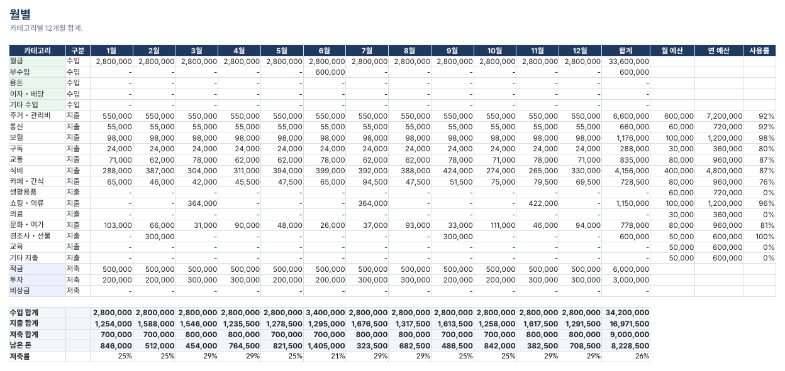
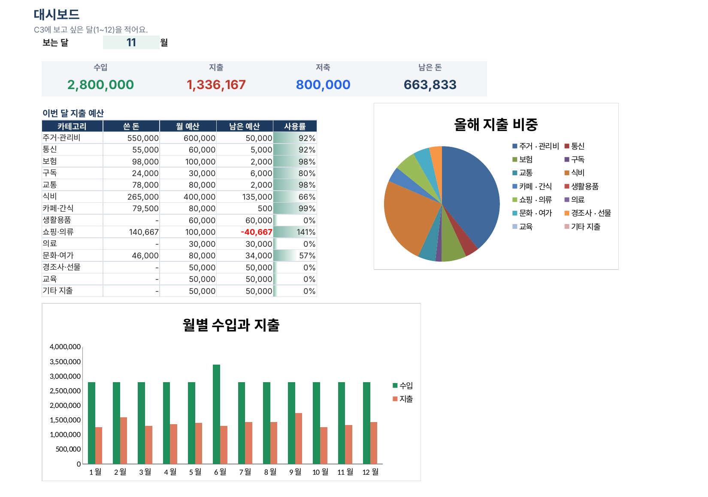

무료 · 엑셀 + 구글 시트 · 2027
2027 가계부 엑셀 무료 양식 (구글 시트 가능)
날짜, 카테고리, 금액만 한 줄씩 적으면 12개월 카테고리별 합계를 자동으로 내 줘요. 월 예산을 넣어 두면 예산 사용률과 저축률도 나와요. 가입이나 이메일 없이 바로 받을 수 있어요.
무료 가계부 받기 (.xlsx, 약 120KB)엑셀과 구글 시트용으로 만들었어요. 수식 계산은 LibreOffice로 확인했어요.

무료판에 들어 있는 것
- 사용법: 4단계 설명
- 설정: 연도(기본 2027), 카테고리 이름(수입, 지출, 저축), 월 예산. 이름을 바꾸면 모든 탭이 따라 바뀌어요.
- 입력: 날짜, 구분, 카테고리, 내용, 금액, 결제수단. 구분과 카테고리, 결제수단은 목록에서 골라요.
- 월별: 카테고리별 12개월 합계, 수입과 지출과 저축 합계, 남은 돈, 저축률, 예산 사용률(100%를 넘으면 빨간색)
구글 시트에서 쓰는 법
- 위 버튼으로 파일을 받아요.
- 구글 드라이브에 올려요.
- 파일을 오른쪽 클릭하고 연결 앱에서 Google 스프레드시트를 골라요.
수식과 목록 선택이 그대로 동작하고, 휴대폰 구글 시트 앱으로도 적을 수 있어요.
카드 할부가 많다면
무료판에서는 할부로 산 물건이 산 달에 전체 금액으로 잡혀요. 36만 원 패딩을 3개월 할부로 샀다면 1월에 36만 원, 2월과 3월은 0원이 돼서 1월은 실제보다 나빠 보이고 다음 달은 실제보다 여유 있어 보여요.
| 무료판 | 유료판 | |
|---|---|---|
| 입력, 12개월 합계, 예산 사용률, 저축률 | 있음 | 있음 |
| 카드 할부를 결제하는 달마다 자동으로 나눠 잡기 | 없음 | 있음(개월 수만 입력) |
| 대시보드: 달을 고르면 수입, 지출, 남은 예산, 그래프 | 없음 | 있음 |
| 고정지출 체크표(빠지는 날, 완료 체크) | 없음 | 있음 |
| 내년에도 그대로 쓰기 | 가능 | 가능 |

유료판은 판매 승인 절차를 밟고 있어요. 열리면 이 페이지에 바로 연결할게요.
새해 저축 목표, 한 달에 얼마씩?
이자까지 넣어 만기 금액을 보고 싶으면 이자 계산기 (예금·적금 세후)에서 확인하세요. 가계부 무료판의 저축 칸에 이 금액을 예산으로 적어 두면 달마다 얼마나 모였는지 바로 보여요.